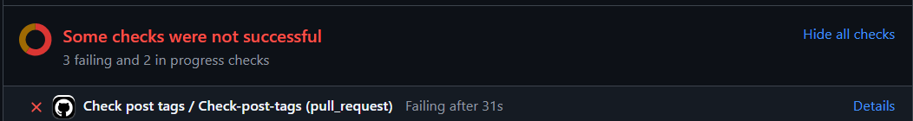
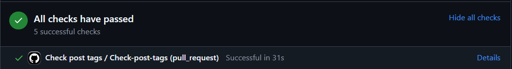
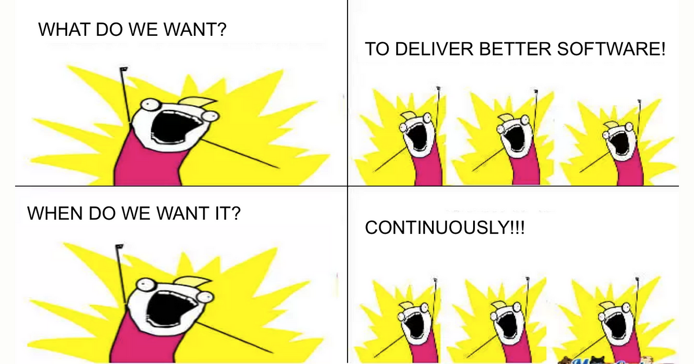

c("Metadata", "SDTM", "ADaM", "TLG", "Shiny", "Community", "Conferences", "Submissions", "Technical")The problem
Each pharmaverseblog post is tagged with one or more categories that describe the topics discussed within it. For instance, this post is tagged Technical. When making a new blog post, users are invited to select the tags from a curated list designed to split the posts according to categories that balance specificity and generality. Here is the list we currently use:
Users can add to this list, however we have observed that more often than not, if users do diverge, it is due to a typo. This has unfortunate effects within our pharmaverseblog, chiefly that our front page glossary of posts is now split:

Within the pharmaverseblog editor team, we wondered whether there was a simple way to police these tags a bit more, perhaps in an automated manner. Enter CICD checks!
TipWhat is CICD?
CICD stands for Continuous Integration, Continuous Deployment and is a catch-all term for automated code pipelines that ensure that new code added to an existing codebase seamlessly assimilates with the rest of the codebase without introducing unexpected behavior.
Often, when working in R projects hosted on GitHub, one encounters CICD in the form of checks that are triggered when making a pull request to the main branch (see image below for an example). These can check all sorts of aspects, ranging from correct spelling in your documentation all the way to executing your function unit tests and checking they all pass.

The pharmaverseblog already had three active CICD pipelines, which run for spelling, style and links. For style and links, we did not write the code for these checks ourselves, rather we just activated open-source checks for our code repository. For spelling, this is a custom pipeline written by one of our blog editors, Stefan Thoma. So, what if we could write another custom CICD pipeline to check that new blog posts use tags from our selected list?
A (CICD) solution
CautionTLDR
- I wrote a function,
check_post_tags()which scans the.qmdfile containing a blog post, extracts the tag(s), and checks them against the allowed list. - Then, I set up a script which loops
check_post_tags()over all our blog posts and identifies offending posts. - Following that, I used the
{cli}package to format a nice error message for all the offending posts and their tags. - Finally, in
.github/workflows, I created a new CICD workflow namedcheck_post_tags.ymlwhich simply executes my script upon every pull request tomain.
Constructing the check
I decided that my strategy would be to write the main body of my CICD check as an R script. As I am relatively confident in R, the main challenge for me would be to then figure out how to automatically execute that script in a CICD pipeline.
After some playing around, I settled with the following 30-line script:
# Get list of blog posts ----
posts <- list.files("posts", recursive = TRUE, pattern = "*.qmd")
# Get vector of allowed tags ----
source("R/allowed_tags.R")
# Function to extract tags from a post and check them against the allowed list ----
check_post_tags <- function(post, allowed_post_tags = allowed_tags) {
post_tags <- rmarkdown::yaml_front_matter(file.path("posts", post))$categories
cross_check <- post_tags %in% allowed_post_tags
problematic_tags <- post_tags[!cross_check]
if (!all(cross_check)) {
cli::format_message("The tag(s) {.val {problematic_tags}} in the post {.val {post}} are not from the allowed list of tags.")
}
}
# Apply check_post_tags to all blog posts and find problem posts ----
check_results <- lapply(posts, check_post_tags)
error_messages <- unlist(Filter(Negate(is.null), check_results))
# Construct error message if one or more posts have problematic tags ----
if (length(error_messages) > 0) {
error_messages <- c(error_messages, "Please select from the following tags: {.val {allowed_tags}}, or contact one of the maintainers.")
names(error_messages) <- rep("x", length(error_messages) - 1)
concatenated_error_messages <- cli::cli_bullets(error_messages)
cli::cli_abort(concatenated_error_messages)
}The script works as follows:
- Get a full list of blog posts. These are all the
.qmdfiles within thepostsfolder of the pharmaverseblog repo. - Specify a vector of “allowed tags” in the
allowed_tags.Rscript. - Specify a function that, given a post:
- Extracts categories from the
yamlheader of the.qmdfile. - Cross-checks the tags with the allowed ones.
- For problematic tags, uses the
{cli}package to construct a nicely-formatted error message.
- Extracts categories from the
- Loop
check_post_tags()over all blog posts using a simplelapply()call and extract all error messages. - If there are any error messages, use
{cli}again to construct a concatenated error message.
The final error message looks something like the below:
✖ The tag(s) "ADaMs" in the post
"2024-06-17_new_admiral_ex.../new_admiral_extension_packages_admiralpeds_coming_soon.qmd"
are not from the allowed list of tags.
Please select from the following tags: "Metadata", "SDTM", "ADaM", "TLG", "Shiny",
"Community", "Conferences", "Submissions", and "Technical", or contact one of the maintainers.Creating a pipeline for the check
When it came to creating a pipeline for the check, if you had asked me to do this a few months ago, I wouldn’t have known my left from my right. Luckily I had recently attended a great CICD workshop at useR 2024 in Salzburg, led by Daphne Grasselly, Franciszek Walkowiak and Pawel Rucki. You can find the repository from their workshop here - it was invaluable to orient me in the right direction. With a (very naive) google search, I also found this video, which shows how to execute an R script automatically whenever a pull request is made to the main branch of a repo.
Through some trial and error, I was able to coalesce the above resources into quite a short yaml file that set up my CICD pipeline. Within the pharmaverseblog repository, the CICD pipelines live under .github/workflows. There, I added the following new workflow, in the form of a yaml file, called check_post_tags.yml:
name: Check post tags
on:
pull_request:
branches:
- 'main'
jobs:
Check-post-tags:
runs-on: ubuntu-latest
container:
image: "rocker/tidyverse:4.2.1"
steps:
- uses: actions/checkout@v4
- name: Run check_post_tags
run: source("R/check_post_tags.R")
shell: Rscript {0}It’s deceptively simple to read:
- We execute the workflow upon any pull request to main.
- When there is a pull request to main, we can load the
rocker/tidyverse:4.2.1docker image which has all the{tidyverse}packages pre-installed. - Then we need to checkout the pharmaverseblog repo and run the
check_post_tags.Rscript.
That’s it! If there are any problematic posts, the script will throw an error and the check will fail like so:

Clicking on the “Details” option will return the error message I constructed previously.

Otherwise, no error will be thrown, the check will pass, and the post is good to go (provided the other checks pass)!

Conclusion

The hardest aspect of the whole process was surpassing the mental barrier of getting started. CICD can be an overwhelming and mysterious topic, but it’s only as complicated as you make it. Of course, I’m still an absolute novice, and maybe my implementation above is not perfect, and there are definitely more complex applications of CICD, but I was still able to write code that solved my specific problem.
If you’d like to read more about CICD within the pharmaverseblog, I’d highly recommend this detailed post by Stefan Thoma on his own blog, where he discusses implementations on the spelling check.
Do you have any use cases for CICD within the pharmaverseblog or any of your own projects? Please reach out - I’d love to hear from you!
Last updated
2026-02-12 22:27:16.82895
Details
Reuse
Citation
BibTeX citation:
@online{mancini2024,
author = {Mancini, Edoardo},
title = {Writing My First Custom {CICD} Action for the
Pharmaverseblog},
date = {2024-09-11},
url = {https://pharmaverse.github.io/blog/posts/2024-09-11_writing_my_first/writing_my_first_custom_ci_cd_action_for_the_pharmaverseblog.html},
langid = {en}
}
For attribution, please cite this work as:
Mancini, Edoardo. 2024. “Writing My First Custom CICD Action for
the Pharmaverseblog.” September 11, 2024. https://pharmaverse.github.io/blog/posts/2024-09-11_writing_my_first/writing_my_first_custom_ci_cd_action_for_the_pharmaverseblog.html.